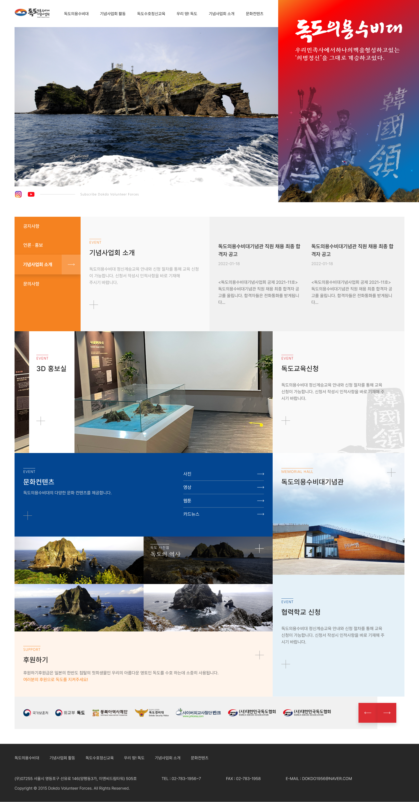

<!DOCTYPE html>
<html>
    <head>
        <meta charset="utf-8" />
        <meta name="viewport" content="width=device-width, initial-scale=1">
        <title>Dokdo Volunteer Defense Team</title>
        <link rel="stylesheet" type="text/css" href="../css/styles.css">
        <link rel="preconnect" href="https://fonts.googleapis.com">
        <link rel="preconnect" href="https://fonts.googleapis.com">
        <link rel="preconnect" href="https://fonts.gstatic.com" crossorigin>
        <link href="https://fonts.googleapis.com/css2?family=Courier+Prime:ital,wght@0,400;0,700;1,400;1,700&family=Montserrat:ital,wght@0,100..900;1,100..900&display=swap" rel="stylesheet">
        <link rel="icon" type="image/png" href="../dy_favicon.png">
    </head>
</html>
<body>
    <div class="mode-toggle">
        <button id="darkModeToggle">
            
        </button>
    </div>
    <header>
        <div class="language-selector">
            <a href="../sub_dokdo_kr.html">KR</a>
            <div class="lang-divider"></div>
            <a href="#" class="active">EN</a>
            <div class="lang-divider"></div>
            <a href="../cn/sub_dokdo_cn.html">CN</a>
        </div>
    </header>
    <div class="sub-contents">
        <a href="index_en.html">&lt; Back to Home</a>
        
        <div class="sub-contents-text">
            <div class="sub-text-title">Overview</div>
            <div class="sub-text-p">
                The Dokdo Volunteer Guard is an organization formed by the residents of Ulleungdo to protect our Dokdo from Japanese aggression. It is a purely civilian group that played a crucial role in enabling Dokdo to fully exercise territorial sovereignty.
                <br/><br/>
                ZiPIDA received a request to design the website for the memorial association, and I collaborated with another designer on this project, contributing 50% to the work. We carefully considered the color scheme and fonts to reflect the characteristics of the original logo and to evoke a sense of identity suitable for our country. We also mixed different fonts to emphasize the achievements left by the Dokdo Volunteer Guard.
                <br/><br/>
                The website was designed to be responsive, with links at the bottom to ensure it can be viewed on mobile devices and tablets as well.
            </div>
        </div>        
        
        
        
        <div class="sub-contents-text">
            <div class="sub-text-title">Link</div>
            <div class="sub-text-p">
                    <a href="https://dokdovolunteerdefenseteam.or.kr/">https://dokdovolunteerdefenseteam.or.kr/</a>
            </div>
        </div>

    </div>
    <footer>
        <p>&copy; 2025 Dayeong Kim. All rights reserved.</p>
    </footer>

    <script src="../js/scripts.js"></script>
</body>